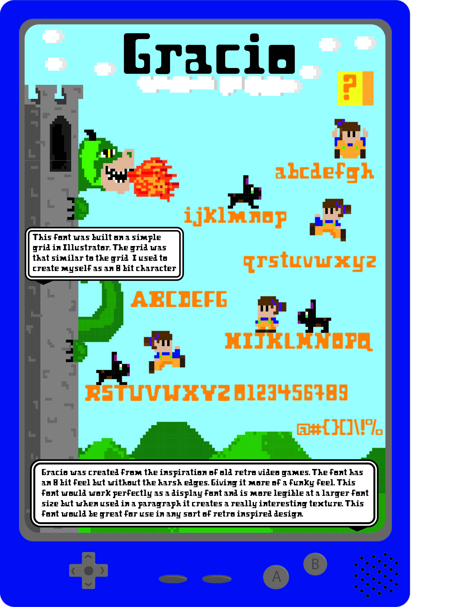
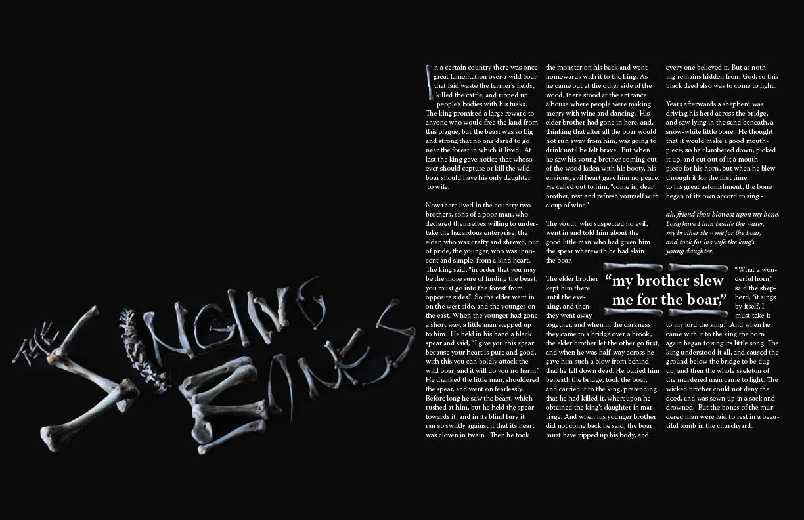

This piece is a poster I designed to display a font I designed. I created a font for retro school video games and so then displayed the font in an illustration of a video game. Keeping with the retro 8-bit feel of the font. This piece is a logo redesign I did for the company Willow Publishing. A small print and publishing shop in Brighton, Ontario.

This is an illustrative type piece for a Grimm Brother's story.